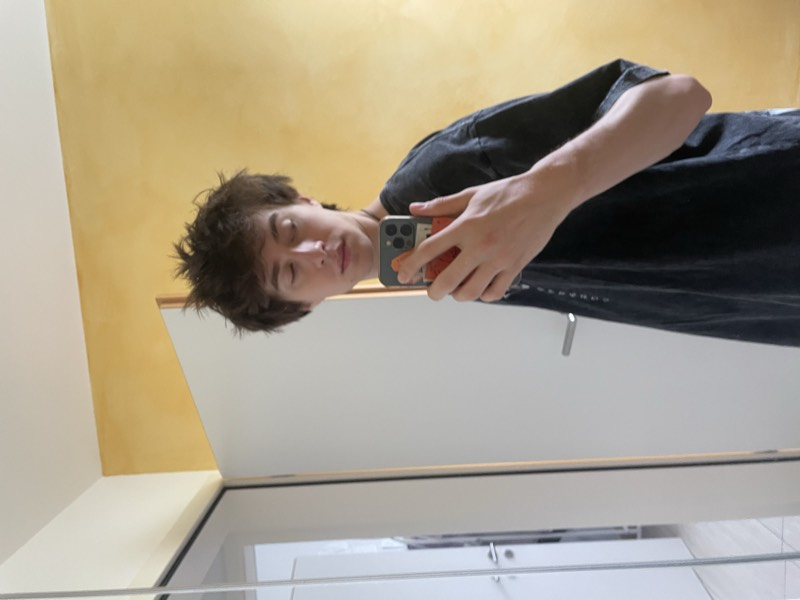

The people · The intent
Three founders, four collaborators, one shared frame. Below: the people who make the company breathe.
[ Founders ]
[ Team ]
The hands, the wires, the words. The people without whom nothing reaches a screen.
Editor · Communication
Gabriele Crasci, born in Lugano in 2000, left his office job at age 22 to pursue a career in film. He studied at the International Conservatory of Audiovisual Sciences (CISA), where he earned a degree in Visual Design in 2024, before specializing in editing and post-production, his main passion. His work focuses on experimental films, in which he explores and combines contemporary visual languages. At the same time, he works in advertising, collaborating with local businesses.

IT Manager · Web
Born in Lugano in 2003. After completing the film school programme alongside Dario and the others, he chose to enrol in the Bachelor of Informatics at USI, and now manages the company's entire IT infrastructure — from internal systems to web platforms. He also designed and built this very website.
Production Assistant
Juggles call sheets, locations and impossible deadlines. Production assistant on Hercules C-130.
Editor
Editor on PoPaCi's documentary slate, including Hercules C-130. Quiet hands, sharp cuts.